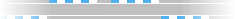
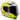
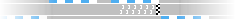
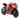
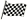
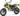

De: La Frikipedia, la enciclopedia extremadamente seria.
De: La Frikipedia, la enciclopedia extremadamente seria. De: La Frikipedia, la enciclopedia extremadamente seria.
| De la serie aquellos suicidas de baja plantilla: | |||
| Marc Márquez  | |||
| |||
| Pais: | Espiña | ||
| Moto nº: | 93 | ||
| Marca: | Honda | ||
| Moto: | Honda RC112 | ||
| Escudería: | Hundido Repsol Team | ||
| Nº de accidentes provocados: | Muchísimos | ||
| Nº de motos destrozadas: | La de Estoril 2010. | ||
| Nº de muertes que se le atribuyen: | Casi la de un tailandés en Australia 2011 [1]. | ||
| ¿Ha ganao alguna vez algo? | Unas cuantas. | ||
Marc Márquez i Alentà, más conocido como Chiquitin, el niño pulga o el suicida, es un niñato piloto català, perdón, E'panhol de motociclismo, el cual probó todas las modalidades (trial y motocross) hasta que se decantó por las motos. Se dice que en realidad fue su madre que le dijo "O te aclaras o te meto a cura". El pobre dijo lo primero que se le ocurrió (según su biografo oficial que no, no es Ángel Nieto sino Jaime Peñafiel)
Al final, acabó siendo piloto de motociclismo y está consiguiendo grandes éxitos (campeonato en 125 y subcampeonato en moto2) tal es su progresión, que se dice que Jorge Lorenzo (Mister E'panha Mojado)quiere dejar las motos para no tener que encontrárselo y acabar por los suelos y estropear así su brillante futuro prometedor: Tronista en MHyV
El pilotaje de este chico se caracteriza en su estilo suicida: siempre va con prisas en ser el primero por lo que apreta al contrincante, se dice que juega con trampa y que existe una mano negra que le ayuda, ya que, no se entiende que, con lo agresivo que es pilotando (y la cara de buen niño)aún no haya acabado en la caja pino.
Sus padres, al ver que su chiquillo era un nervio y que, después de haber atropellado a: varios gatos, abuelas que se cruzaban los pasos de cebra e incluso, persiguiendo a su hermano pequeño en moto, optaron que, en lugar de llevarlo a un centro de acogida, lo mejor sería que el chico se dedicara a sacar su energia en un lugar seguro.
Antes de entrar de lleno en el motociclismo, optó por otras modalidades como el trial y el motocross quedando en esta última como campeón de Catalunya en 2001.
En el 2004, empezó su andadura en el motociclismo, quedando subcampeón de 125cc en CataluNYa por detrás de Pol Espargaró (Pol le amenazó en quitarle los gormitis, por lo que se comportó bien y las ansias en adelantar sólo quedaron en casa persiguiendo a su hermano Àlex)
En 2007, Emilio Alzamora (ex-piloto de 125cc) lo ve y se quedó eclipsado ante su modus operandi por lo que decide ficharlo en su equipo logrando grandes éxitos y grandes fracturas.
Después de destrozar todos los campeonatos, en el 2010 lo llevaron a competir en carreras serias como las de 125cc, para ver si se calmaba, pero no hubo forma, tanto fue, que acabó siendo el campeón ese mismo año de dicha modalidad.
Ahora bien, como no, se llevó por delante a varios compañeros, jueces, espectadores y animales despistados que pasaban por las pistas, éso sí, NADIE acabó odiándolo debido a su cara de buen chico que al hacer la técnica de "gato de Shreck" cualquiera se deja atropellar por él.
Valentino Rossi, quedó fascinado ante el pilotaje de Marc Márquez e hizo mención públicamente de ser un groupie del chaval.
Su instinto suicida quedó tan patentado en un año que, decidió marcharse de 125cc e irse a Moto2 para ver si podría encontrar un rival "digno de admirar" y se lo encontró: él mismo
Empezó bastante mal, ya que no estaba acostumbrado a su nueva moto ni a sus nuevos compis de juegos y entre caídas por auto fallos o provocadas por compañeros de competición, hizo que se dudara de su continuación en moto2 y que volviera a 125cc, cosa que sus compañeros de 125cc NO deseaban que dicho hecho sucediera ya que le tenían pánico.
Pero fue a mediados de competición dónde encontró motivación: Stefan Bradl un alemán soso, que sólo sabía acabar las competiciones de dos formas: o Podio o Camilla.
El mundial de Moto2 del 2011 estuvo reñido entre ellos, hasta que Marc, cayó y le era imposible continuar por lo que Stefan Bradl se despertó y ganó el Mundial, motivado básicamente, en no encontrarse nunca más con Marc Márquez.
Finalmente, en el 2012, consiguió lo que se había propuesto en el 2011: ganar el campeonato. Éso sí, no lo tuvo fácil, ya que sus compañeros de carreras no entendían que al pobre le diera por adelantar y correr y superarlos e ir a su bola y después de muchos lloros, la competición, creyó oportuno castigar a Marc en la carrera de Cheste dejándolo en último lugar, cosa que le interesaba a Nico Terol y Julián Simón (así podían justificar sus pésimos resultados), lo que no sabían es que el chiquitin acabaría primero y por lo tanto, con los puntos necesarios para proclamarse campeón en esta categoría.
Dicen las malas lenguas, que a raíz de su temporada con el ojo emparchado, adquirió poderes sobrenaturales, pero claro, la fuente es el tipo del parche de Intereconomia que dice ver el futuro de España en manos de los "rojos"
En 2013, sus compañeros de carreras en Moto 2 se manifestaron ante el comité amenazando que no correrían ninguna carrera si estaba en ella Márquez ya que tenía la dichosa manía de adelantarlos, e ir a su bola. Por lo que, el comité, optó en darle al chaval la opción de ir a la categoría reina. En un principio no mostró mucho entusiasmo, ya que estaba experimentando cómo trucar su scoopy de 4ta mano, pero luego, cuando le comunicaron el cambio de categoría y su nuevo equipo, mostró algo más de interés.
De hecho, este año pensaba comportarse y seguir los pasos de su maestro de su nuevo equipo (Repsol Honda) Dani Pedrosa, pero, al ver que éste, estaba en una etapa zen y meditación, optó en dejar de ser el secundario y hacer lo que mejor sabe hacer: pilotar en modo kamikaze. Pilontando, de esta forma tan agresiva, consiguió seguidores (Rossi) pero también detractores, entre ellos, el más notorio de todos: el 2do Damo de Honor Moto GP y ex Pelo Pantene Jorge Lorenzo.
Con este despertar, el chico empezó a espabilarse y ganar, o quedar en podio (éso sí, siempre con una sonrisa) por lo que, acabó siendo primero en la clasificación mundial de moto GP.
Al ver dicha hazaña, Jorge Lorenzo, en un ataque de celos cual ex-amante despechada, se fue al comité de expertos, como si no tuvieran nada más que hacer, para denunciar el modus operandis de Márquez. Éstos, para no escuchar los lamentos, accedieron y "castigaron" a Márquez, dándole márgen a Lorenzo para recuperar puntos y acercarse al mundial, pero ni con éstas, lo ha conseguido.
Por lo que Márquez, se convirtió en el piloto más joven en ganar la categoría reina.
Se dice, que los primeros en felicitar a Márquez han sido: el del parche de Intereconomia y Carlos Fabra, por su ex condición de tuerto, mientras que Lorenzo, a media temporada, había firmado un millonario contrato con telecinco para ser el substituto natural de Rafa Mora, pero que Vasile, al ver su actitud y sobretodo, su mal perder, optó desentenderse del chaval y utilizar la opción B como substituto natural de Rafa Mora: Un mono utilizado como prueba con productos de belleza facial.
Durante este 2014, empezó a todo GAS, ganando todas las carreras habidas y por haber, cosa que provocó que: Valentino Rossi mojara los calzoncillos más de una vez (en concreto 10 veces y seguidas) que Jorge Lorenzo acabara con un ataque de perra loca por no ser la estrella de la carrera, por lo que pilotaba como una drama queen y que Dani Pedrosa en lugar de competir, le diera por reflexionar sobre su futuro ¿qué hacer? ¿hacerse tertuliano político o presentar bricomania? Éso sí, en República Checa, San Marino y Aragón, Marc, dejó el podio, en un acto de humildad, y permitió que los demás pudieran saborear la gloria del mejor, ya que, sus jefes japoneses ellos, querían que el niño revalidara el título en Japón como homenaje a sus dioses (ya que sacrificar a Jorge Lorenzo o Nico Abad no era una opción muy razonable por la posible furia que ello provocaría)
Para la próxima temporada, seguirá en HONDA y su compañero será Dani Pedrosa (ya que no le gusta la política y le da miedo clavarse un clavo) hecho, que NO gusta nada a sus contricantes, menos a Valentino Rossi (que el pobre, imaginándose como puede ser la próxima temporada, ya lleva pañal) por lo que, ya están haciendo cola para presentarse al casting de comentarista de MOTO GP o en su defecto al programa de los críos (la mayoría de ellos no superan el 1.70 m) ya que no quieren que los avergüence de nuevo como en este 2.014
La hiperactividad de este chico se puede resumir en logros deportivos, que éstos serían:
Debido a su accidente en la penúltima carrera del 2011, que le acarreó problemas de visión, reflexionó seriamente en dejar las motos para dedicarse a presentar el telediario de Intereconomía con el señor del Parche. Así, serían el Sr. del Parche y el Sr. del Parche Jr. Esta idea, quedó en sólo una idea ya que luego vio a su hermano cogiéndole su xBox por lo que, se fue a por él, persiguiéndole en moto.
Él y Dani Pedrosa tienen una característica similar: Tienen horchata en lugar de sangre Saben pasar olímpicamente del Chulo Piscinas de Jorge Lorenzo, cosa que Jorge detesta.
Marc no sólo tiene fijación en atropellar a su hermano Àlex, sino que, a partir del capítulo de los Simpsons donde Homer intenta sobrepasar un acantilado con el monopatin de Bart, quiere hacer lo mismo, pero su madre no le deja, no por la animalada que llega a ser, sino porque nunca sale de casa con la rebequita.
Este año, se ha ganado un enemigo más, no sólo Jorge Lorenzo lo detesta, sino que ha salido del armario otro archienemigo: Nico Abad ése periodista deportivo (no me he tomado nada aún, lo consideran los de su gremio así, ¿qué hago?) que sabe tanto de Motos como yo de: física nuclear, quizás es que tenga unas buenas rodilleras y de ahí que sus epics fails acaben en el olvido.
|
 Pilotos 
 Escuderías
 Circuitos
 Otros
|
Autor(es):